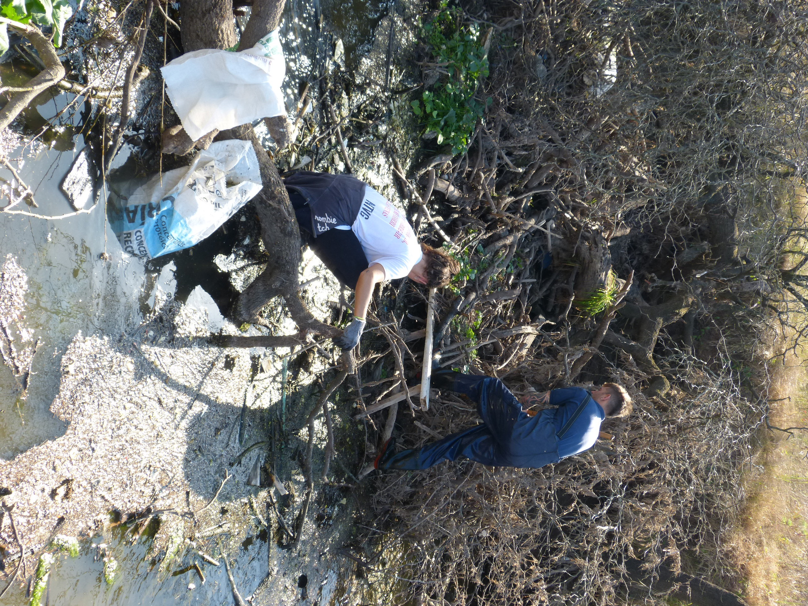
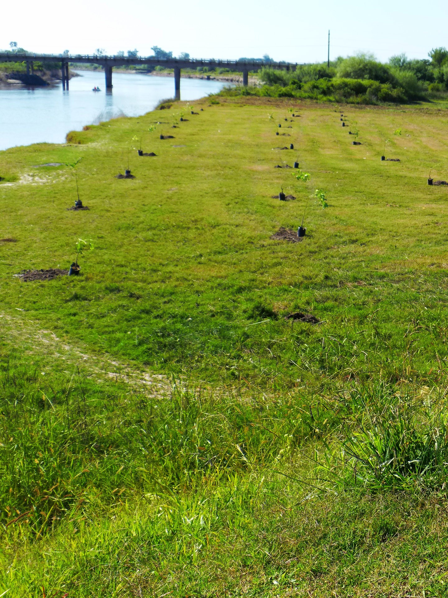

Nuestra labor se centra en la investigacion, conservacion y educacion para preservar su
salud y biodiversidad. A traves del monitoreo de la calidad del agua, la restauracion
de habitats y la participacion comunitaria, trabajamos incansablemente para garantizar
un futuro prospero para el arroyo Cululu y las especies que dependen de el.
En Naturalis, nos esforzamos por involucrar a las comunidades locales
en la conservacion del arroyo Cululu, promoviendo la conciencia ambiental y fomentando
la participacion activa en proyectos de restauracion y limpieza. Creemos en el poder transformador
del trabajo en equipo y en la colaboracion colectiva para salvaguardar nuestro patrimonio natural.

Limpieza
Nos dedicamos a la limpieza activa del arroyo,
eliminando desechos y contaminantes que puedan afectar su salud y
la de las especies que lo habitan. Organizamos jornadas de limpieza
comunitaria y programas de concienciacion para promover practicas responsables entre
los habitantes locales y visitantes.

Preservacion
Tambien se enfoca en la preservacion del arroyo Cululu y su entorno natural.
Esto implica la proteccion de sus habitats naturales, la conservacion de la flora
y fauna autoctona y la restauracion de areas degradadas. Trabajamos en estrecha colaboracion
con biologos, ecologistas y expertos en conservacion para desarrollar estrategias efectivas
que salvaguarden la integridad del ecosistema acuatico.
Reciclado
Finalmente, promueve activamente el reciclado y la gestion sostenible de los recursos en
la cuenca del arroyo Cululu. Fomentamos practicas de reduccion de residuos y la implementacion
de sistemas de reciclaje en las comunidades circundantes. Ademas, educamos sobre
la importancia de la economia circular y apoyamos iniciativas locales de reciclaje para
minimizar el impacto ambiental y promover un uso responsable de los recursos naturales.